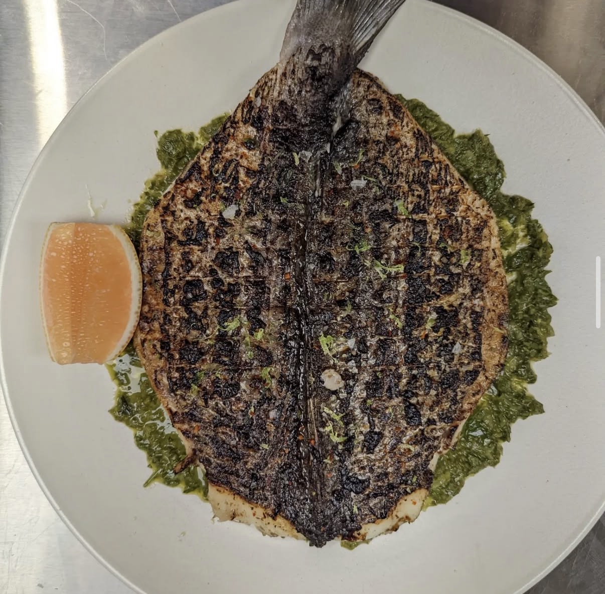

Classic Beef Bourguignon
Julia Child called it the most famous French beef stew. Chunks of beef chuck slowly braised in a full bottle of Burgundy wine with smoky lardons, glistening pearl onions, and earthy mushrooms. This is French cooking at its most triumphant — and yes, you can make it at home.
↓ Jump to Recipe
Beef Bourguignon isn't just a recipe — it's a technique lesson in French braising. Every step has a purpose: the bacon lardons render and flavor the oil you sear the beef in. The beef is dried and seared in batches so it browns rather than steams. The wine is reduced before adding to the braise to remove harshness. The pearl onions and mushrooms are cooked separately and added at the end to maintain their individual textures. Nothing is accidental.
Like all great braises, this is a make-ahead dish that improves overnight. Make it Saturday, refrigerate overnight, skim the fat, and reheat gently on Sunday to serve one of the most impressive dinner party meals in existence. Serve over mashed potatoes, egg noodles, or crusty bread to soak up every drop of that wine-dark sauce.
Ingredients
- 1.5 kg (3.3 lbs) beef chuck, cut into 5cm (2-inch) cubes
- 200g (7 oz) thick-cut bacon or lardons
- 1 bottle (750ml) good Burgundy or Pinot Noir
- 500ml (2 cups) beef broth
- 2 medium carrots, cut into 2-inch pieces
- 1 large onion, roughly diced
- 4 garlic cloves, minced
- 3 tbsp tomato paste
- 2 tbsp all-purpose flour
- 1 bouquet garni (bay leaves, thyme, parsley stems, tied together)
- 250g (9 oz) white button or cremini mushrooms, quartered
- 250g (9 oz) pearl onions, peeled (frozen works perfectly)
- 3 tbsp unsalted butter, divided
- Salt, pepper, and 1 tsp sugar (for pearl onions)
- Fresh parsley, to finish
Instructions
- Marinate (optional but recommended). The night before, combine beef, wine, carrots, and sliced onion. Refrigerate overnight. Drain and pat the beef dry before cooking. Reserve the marinade.
- Preheat oven to 165°C (325°F). Render the bacon in a Dutch oven over medium heat until crispy. Remove bacon with a slotted spoon, leaving the fat in the pot.
- Sear the beef. Pat beef cubes completely dry. Season with salt and pepper. Working in batches, sear over high heat in the bacon fat until deep brown on all sides, 3–4 minutes per side. Do not crowd the pot. Set aside.
- Sauté aromatics. In the same pot, cook diced onion and carrots 5 minutes. Add garlic and tomato paste, cook 2 minutes until paste darkens. Sprinkle flour over vegetables and stir to coat, cook 1 minute.
- Deglaze and reduce. Add the wine (or reserved marinade), scraping the bottom clean. Bring to a boil and reduce by one-third, about 10 minutes.
- Braise. Return beef and bacon to the pot. Add broth and bouquet garni. The liquid should nearly cover the meat. Bring to a simmer, then cover and transfer to the oven. Braise 3–3.5 hours until beef is completely tender and falling apart.
- Cook the pearl onions separately. In a skillet, combine pearl onions, 1 tbsp butter, 1 tsp sugar, salt, and just enough water to cover. Cook over medium heat until water evaporates and onions become glazed and golden, about 15 minutes. Set aside.
- Sauté mushrooms separately. In the same skillet, melt 2 tbsp butter over high heat. Sauté mushrooms in a single layer until golden brown. Season with salt. Set aside.
- Finish and degrease. Remove the beef from the oven. Discard bouquet garni. Transfer beef to a plate. Strain and degrease the sauce — or if you prefer, serve it unstrained (rustic style). Simmer the sauce 10–15 minutes to reduce and concentrate.
- Combine and serve. Return beef, pearl onions, and mushrooms to the sauce. Heat through gently. Taste and adjust seasoning. Serve garnished with fresh chopped parsley.
Chef's Pro Tips
- The most important step: dry the beef completely before searing. Wet beef = steamed beef, not browned beef.
- Cook the mushrooms and pearl onions separately to preserve their texture. If you add them to the braise, they'll go mushy.
- Taste the sauce at the end. If it's too winey or acidic, simmer longer. If it's flat, add a splash of cognac or a squeeze of lemon.
- Serve with a Pinot Noir from Burgundy or Oregon — drink the same wine you cooked with.